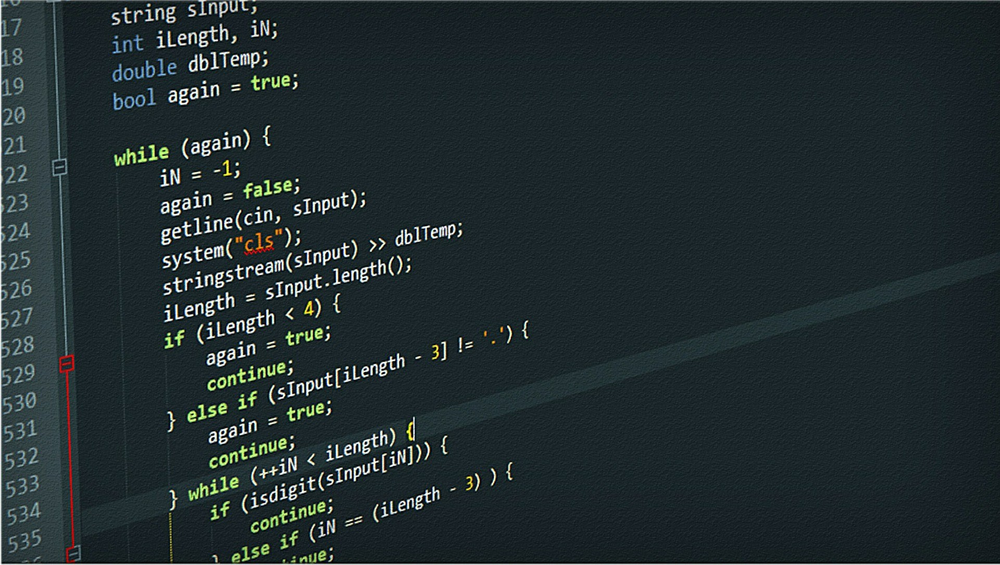
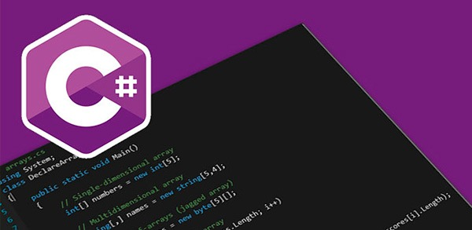
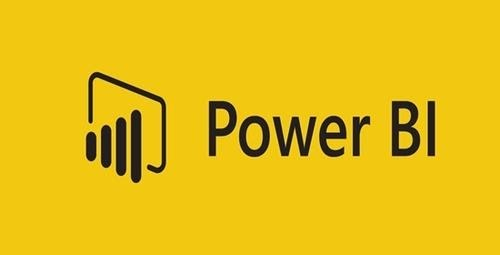

C é uma linguagem de programação compilada de propósito geral, estruturada, imperativa, procedural, padronizada pela Organização Internacional para Padronização (ISO), criada em 1972 por Dennis Ritchie na empresa AT&T Bell Labs para desenvolvimento do sistema operacional Unix (originalmente escrito em Assembly).
C é uma das linguagens de programação mais populares e existem poucas arquiteturas para as quais não existem compiladores para C. C tem influenciado muitas outras linguagens de programação (por exemplo, a linguagem Java), mais notavelmente C++, que originalmente começou como uma extensão para C.
O que você aprenderá?
✔ Programar em C++ com desenvoltura do nível básico até o avançado.
✔ Programar utilizando as principais estrutruras de Programação (Variáveis, if, else, switch, case, while, for)
✔ Como declarar variáveis com os tipos de dados C++ (int, float, double, char, bool, string)
✔ Como usar os operadores Aritméticos + - * / %, Relacionais == , > , >= , < , <=, != e Lógicos AND - E - &&, OR- OU - || e NOT - NÃO -
✔ O que é e como utilizar a IDE Visual Studio para programar seus códigos em C++
✔ Conceitos importantes do mundo da programação como Abstração, Códigos Fonte, Objeto e Executável, compilação, linkedição, pré-processamento
✔ Conceitos de Lógica, Algoritmo, Pseudocódigo e Processamento de Dados
✔ Como Debugar(executar passo a passo) seu código com BreakPoints
✔ Manipular Operadores de Incremento ++ e Decremento -- Pré-fixados e Pós-Fixados
✔ Como usar operador Ternário interrogação ? para substituir o if, else
✔ Como trabalhar com Loops de Repetição while e for
✔ O que são funções, como declarar, utilizar e criar protótipos
✔ Como entender de vez os temidos ponteiros*
✔ Como trabalhar com referências& e as diferenças em relação aos ponteiros*
✔ Trabalhando com structs, Vetor de structs, typedef e structs Aninhadas
✔ Orientação à Objetos: Classe, Objetos, Instanciação, Atributos, Métodos
✔ Conceitos Avançados de Orientação a Objetos com C++: Herança

C# é uma linguagem de programação, multiparadigma, de tipagem forte, desenvolvida pela Microsoft como parte da plataforma .NET. A sua sintaxe orientada a objetos foi baseada no C++ mas inclui muitas influências de outras linguagens de programação, como Object Pascal e, principalmente, Java. O código fonte é compilado para Common Intermediate Language (CIL) que é interpretado pela máquina virtual Common Language Runtime (CLR). C# é uma das linguagens projetadas para funcionar na Common Language Infrastructure da plataforma .NET Framework.
O que você aprenderá?
✔ Dominar Programação Orientada a Objetos e linguagem C#
✔ Criar soluções flexíveis, extensíveis e testáveis
✔ Adquirir a base sólida teórica e prática para ser um desenvolvedor C# de sucesso
✔ Aplicar o conhecimento de orientação a objetos na construção de soluções para problemas reais
✔ Compreender diagramas de classe UML, tanto de entidades quanto de serviços
JavaScript (frequentemente abreviado como JS) é uma linguagem de programação interpretada estruturada, de script em alto nível com tipagem dinâmica fraca e multiparadigma (protótipos, orientado a objeto, imperativo e, funcional). Juntamente com HTML e CSS, o JavaScript é uma das três principais tecnologias da World Wide Web. JavaScript permite páginas da Web interativas e, portanto, é uma parte essencial dos aplicativos da web. A grande maioria dos sites usa, e todos os principais navegadores têm um mecanismo JavaScript dedicado para executá-lo.
É atualmente a principal linguagem para programação client-side em navegadores web. É também bastante utilizada do lado do servidor através de ambientes como o node.js.
Como uma linguagem multiparadigma, o JavaScript suporta estilos de programação orientados a eventos, funcionais e imperativos (incluindo orientado a objetos e prototype-based), apresentando recursos como fechamentos (closures) e funções de alta ordem comumente indisponíveis em linguagens populares como Java e C++. Possui APIs para trabalhar com texto, matrizes, datas, expressões regulares e o DOM, mas a linguagem em si não inclui nenhuma E/S, como instalações de rede, armazenamento ou gráficos, contando com isso no ambiente host em que está embutido.
Foi originalmente implementada como parte dos navegadores web para que scripts pudessem ser executados do lado do cliente e interagissem com o usuário sem a necessidade deste script passar pelo servidor, controlando o navegador, realizando comunicação assíncrona e alterando o conteúdo do documento exibido, porém os mecanismos JavaScript agora estão incorporados em muitos outros tipos de software host, incluindo servidores em servidores e bancos de dados da Web e em programas que não são da Web, como processadores de texto e PDF, e em tempo de execução ambientes que disponibilizam JavaScript para escrever aplicativos móveis e de desktop, incluindo widgets de área de trabalho.
O que você aprenderá?
✔ Torne-se um especialista na linguagem mais usada no mundo, o JavaScript com dois especialistas no assunto. Em mais de 200 aulas você aprenderá do básico ao avançado como enriquecer o seu site ou aplicativo web com o que existe de melhor nesta poderosa linguagem.
✔ São mais de 38 horas de gravação em um Estúdio Profissional, com qualidade de áudio perfeita, didática impressionante com ilustrações, animações e vídeos de apoio.
✔ Aprenda a utilizar os recursos da versão ES6 (ES2015) e ES7 (ES2016) do JavaScript, desde array e objetos, a construção de um WhatsApp Clone e DropBox Clone usando Firebase, Single Page Application, REST API, localStorage, áudio, câmera e muito mais.
✔ Aprenderá a criar uma API escrita com JavaScript em NodeJS e consumida também com JavaScript.
✔ Faremos upload de arquivos usando também JavaScript no Front-End e Back-End.
✔ Aprenderá a desenvolver um site completo com administração usando o Express JS, Socket IO e Chart JS.
✔ Você aprenderá desde o básico da linguagem JavaScript até o avançado e também aprenderá a pensar em JavaScript com o uso de técnicas recomendadas e testadas pelo mercado.

Python é uma linguagem de programação de alto nível, interpretada, de script, imperativa, orientada a objetos, funcional, de tipagem dinâmica e forte. Foi lançada por Guido van Rossum em 1991. Atualmente possui um modelo de desenvolvimento comunitário, aberto e gerenciado pela organização sem fins lucrativos Python Software Foundation. Apesar de várias partes da linguagem possuírem padrões e especificações formais, a linguagem como um todo não é formalmente especificada. O padrão de facto é a implementação CPython.
A linguagem foi projetada com a filosofia de enfatizar a importância do esforço do programador sobre o esforço computacional. Prioriza a legibilidade do código sobre a velocidade ou expressividade. Combina uma sintaxe concisa e clara com os recursos poderosos de sua biblioteca padrão e por módulos e frameworks desenvolvidos por terceiros.
Python é uma linguagem de propósito geral de alto nível, multiparadigma, suporta o paradigma orientado a objetos, imperativo, funcional e procedural. Possui tipagem dinâmica e uma de suas principais características é permitir a fácil leitura do código e exigir poucas linhas de código se comparado ao mesmo programa em outras linguagens. Devido às suas características, ela é principalmente utilizada para processamento de textos, dados científicos e criação de CGIs para páginas dinâmicas para a web. Foi considerada pelo público a 3ª linguagem "mais amada", de acordo com uma pesquisa conduzida pelo site Stack Overflow em 2018, e está entre as 5 linguagens mais populares, de acordo com uma pesquisa conduzida pela RedMonk.
O que você aprenderá?
✔ Você será capaz de criar programas sofisticados com a linguagem Python
✔ Você será capaz de se tornar um cientista de dados utilizando Python
✔ Você será capaz de se tornar um especialista em inteligência artificial utilizando Python
✔ Você será capaz de se tornar um especialista em programação web com algum framework Python

PHP (um acrônimo recursivo para "PHP: Hypertext Preprocessor", originalmente Personal Home Page) é uma linguagem interpretada livre, usada originalmente apenas para o desenvolvimento de aplicações presentes e atuantes no lado do servidor, capazes de gerar conteúdo dinâmico na World Wide Web.[3] Figura entre as primeiras linguagens passíveis de inserção em documentos HTML, dispensando em muitos casos o uso de arquivos externos para eventuais processamentos de dados. O código é interpretado no lado do servidor pelo módulo PHP, que também gera a página web a ser visualizada no lado do cliente. A linguagem evoluiu, passou a oferecer funcionalidades em linha de comando, e além disso, ganhou características adicionais, que possibilitaram usos adicionais do PHP, não relacionados a web sites. É possível instalar o PHP na maioria dos sistemas operacionais, gratuitamente. Concorrente direto da tecnologia ASP pertencente à Microsoft, o PHP é utilizado em aplicações como o MediaWiki, Facebook, Drupal, Joomla!, WordPress, Magento e o Oscommerce.
Criado por Rasmus Lerdorf em 1995, o PHP tem a produção de sua implementação principal, referência formal da linguagem, mantida por uma organização chamada The PHP Group. O PHP é software livre, licenciado sob a PHP License, uma licença incompatível com a GNU General Public License (GPL) devido a restrições no uso do termo PHP.
O que você aprenderá?
✔ Com este Curso Completo que aborda conceitos, e exemplos práticos você aprenderá com dois especialistas como desenvolver projetos reais.
✔ Ao final do Curso, os alunos que assistirem todas as aulas, realizarem os testes, exercícios e acompanharem os projetos desenvolvido com os instrutores, estarão aptos a desenvolverem sites e sistemas utilizando uma linguagem robusta e completa que é o PHP 7, além de aprenderem boas práticas e analisarem mudanças ocorridas na linguagem.
✔ Aprenderá o PHP do Zero ao Avançado além das diferenças das versões anteriores do PHP para a atual.
✔ Aprenderá a conectar o PHP 7 com MySQL e SQL Server usando PDO e MySQLi.
✔ Irá entender toda estrutura lógica, condicional e de repetição do PHP.
✔ Aprenderá conceitos como o MVC, ORM e Orientação à Objetos.
✔ Entenderá como funciona sessões em um servidor com PHP.
✔ Aprenderá a instalar e configurar um Servidor Web capaz de rodar qualquer aplicação em PHP 7.

HTML (abreviação para a expressão inglesa HyperText Markup Language, que significa: "Linguagem de Marcação de Hipertexto" é uma linguagem de marcação utilizada na construção de páginas na Web. Documentos HTML podem ser interpretados por navegadores. A tecnologia é fruto da junção entre os padrões HyTime e SGML.
HyTime é um padrão para a representação estruturada de hipermídia e conteúdo baseado em tempo. Um documento é visto como um conjunto de eventos concorrentes dependentes de tempo (como áudio, vídeo, etc.), conectados por hiperligações (em inglês: hyperlink e link). O padrão é independente de outros padrões de processamento de texto em geral.
SGML é um padrão de formatação de textos. Não foi desenvolvido para hipertexto, mas tornou-se conveniente para transformar documentos em hiper-objetos e para descrever as ligações.
O que voce aprenderá?
✔ Compreender os conceitos da linguagem de marcação HTML5
✔ Compreender como organizar seu conteúdo HTML5 usando corretamente as estruturas semânticas da linguagem
✔ Compreender a importância da boa estruturação de páginas HTML 5 para auxiliar na indexação por parte das ferramentas de busca como Google e Bing
✔ Aprender como hospedar suas páginas gratuitamente usando o GitHub Pages, Netflify e até o Google Drive!
✔ Compreender os conceitos de registro de domínio e hospedagem de websites
✔ Hospedar suas páginas web de forma gratuita na Internet
✔ Registrar domínios de forma gratuita, para ter endereços web simples e sem o nome de empresas como Wix
✔ Ter uma visão geral das tecnologias HTML, CSS e JavaScript
O que você aprenderá?
✔ Desenvolver páginas em HTML5
✔ Analisar tag HTML5 em site
✔ Mudanças de tag do HTML5
✔ Entender o Desenvolvimento Web

O Microsoft Power BI é a ferramenta de Business Intelligence da Microsoft. Com ela é possível consolidar, tornar coerentes e visuais as informações que se encontram em diversas fontes, desde uma simples pasta de trabalho do Microsoft Excel, a arquivos localizados na nuvem.
Essa ferramenta é uma coleção de serviços de software, aplicativos e conectores que trabalham juntos para transformar suas fontes de dados não relacionadas em informações coerentes, visualmente envolventes e interativas.
Além disso, ela também possibilita o fácil acesso e compartilhamento dessas informações.
O que você aprenderá?
✔ Melhorar o poder de análise de dados e compreender o processo de tomada de decisões baseadas em dados
✔ Fazer modelagem avançada de dados através do uso das funções DAX e do relacionamento de tabelas
✔ Conhecer a teoria e a Engine por trás do Power BI
✔ Entender a diferença entre os modos de utilização do Power BI
✔ Entender a diferença entre os planos do Power BI
✔ Conhecer de forma detalhada e avançada as principais funções DAX
✔ Aplicar as funções DAX em diferentes cenários para análises avançadas em casos reais
✔ Entender as diferentes formas de compartilhamento com outros membros da equipe e com usuários finais
Microsoft Excel é um programa capaz de armazenar, organizar e editar dados em formato de planilhas para a construção de gráficos, tabelas, análises, entre outras funcionalidades, que vão das básicas até as avançadas.
Entre as funções avançadas está o VBA, capaz de criar macros e automatizar processos dentro das planilhas. Durante a Formação Excel VBA da Alura você aprenderá desde os princípios básicos em Excel até funcionalidades avançadas e específicas que facilitarão seu dia a dia.
Visual Basic para aplicações ou VBA é uma linguagem de programação capaz de automatizar tarefas e processos manuais no Excel, agilizar a organização e análise de dados de uma planilha, personalizar soluções da análise de dados utilizando palavras-chave e muito mais.
O que você aprenderá?
✔ Com as Macros e o VBA você vai aprender a colocar o Excel para fazer o seu trabalho para você (e você ainda vai ganhar o crédito por isso!)
✔ Aprenda a AUTOMATIZAR TODO SEU TRABALHO em planilhas
✔ Torne-se até 10x mais produtivo em qualquer trabalho com Excel
✔ Coloque o Excel em PILOTO AUTOMÁTICO com as macros VBA
✔ Automatize e customize como quiser praticamente TUDO no Excel
✔ Aprenda VBA do Básico ao Avançado, começando do Zero, construindo seus próprios projetos reais e evoluindo para se tornar um Expert em VBA. Não estranhe se quando terminar o curso as pessoas começarem a te chamarem de mago do Excel.
✔ Aprenda a usar os métodos Cells e Range para controlar o Excel
✔ Aprenda a usar o Excel para te ensinar VBA. Grave, Modifique e crie do zero suas próprias Macros VBA
✔ Use os operadores lógicos e as estruturas If e Select Case para tratar qualquer condição de qualquer análise que você queria fazer
✔ Gere relatórios prontos para imprimir com um simples clicar de um botão
✔ Gere relatórios prontos para imprimir com um simples clicar de um botão
✔ Aprenda a controlar várias planilhas de uma vez só. Se você sempre pensou se era possível integrar mais uma planilha Excel de forma automática, com os eventos e métodos de planilhas e aplicações do VBA você vai conseguir fazer isso de forma extremamente rápida.
✔ Crie suas próprias funções do Excel. Se você já ficou travado no Excel porque “não existe uma função para o que você precisa”, essa é a parte que você aprende “burlar o Excel”. Você vai aprender a criar fórmulas no Excel que façam o que você quer e da forma que você precisa.
✔ Quer que o Excel faça alguma coisa sempre que você abrir a planilha? Use o poder dos Eventos e coloque o Excel para fazer o que você quer sempre que alguém abrir a planilha, mudar de aba, editar uma célula, salvar a planilha e muito mais.
✔ Enfim, nesse curso você vai aprender a colocar o Excel para fazer praticamente qualquer coisa que você precise com planilhas (até falar ele consegue, é sério).

O Microsoft SQL Server é um sistema gerenciador de Banco de dados relacional (SGBD) desenvolvido pela Sybase em parceria com a Microsoft.
Esta parceria durou até 1994, com o lançamento da versão para Windows NT e desde então a Microsoft mantém a manutenção do produto.
Como um Banco de dados, é um produto de software cuja principal função é a de armazenar e recuperar dados solicitados por outras aplicações de software, seja aqueles no mesmo computador ou aqueles em execução em outro computador através de uma rede (incluindo a Internet).
Há pelo menos uma dúzia de diferentes edições do Microsoft SQL Server destinadas a públicos diferentes e para diferentes cargas de trabalho (variando de pequenas aplicações que armazenam e recuperam dados no mesmo computador, a milhões de usuários e computadores que acessam grandes quantidades de dados a partir da Internet ao mesmo tempo).
Suas linguagens de consulta primárias são Transact-SQL (T-SQL) e ANSI SQL.
O que você aprenderá?
✔ Entender a diferença entre um Administrador de Dados e um DBA
✔ Criar bancos de dados consistentes do ponto de infraestrutura e modelagem.
✔ Instalar o Banco de Dados MySql
✔ Executar a linguagem SQL - Structured Query Language, ou Linguagem de Consulta Estruturada em QUALQUER banco de dados.
✔ Entender todo o ambiente trasacional e optar por continuar seus estudos em ambientes analíticos de Business Intelligence
✔ Instalar o Banco de Dados Oracle
✔ Instalar o Banco de Dados SQL Server
✔ Modelar a base de dados para qualquer sistema transacional
✔ Programar em Banco de Dados
✔ Realizar Backups e Restores dos seus Bancos de Dados
✔ Aplicar Constraints de qualquer natureza em suas tabelas
✔ Aplicar as Formas Normais
✔ Criar Triggers, Procedures, Functions e Views
✔ Escolher as funções nativas de qualquer banco de dados, de acordo com a sua necessidade
✔ Utilizar o Dicionário de Dados
✔ Estar seguro na disciplina Banco de Dados
✔ Realizar downloads de softwares relacionados a banco de dados
✔ Utilizar softwares de modelagem
✔ Aplicar seguramente os relacionamentos 1 x 1 , 1 x N, N x N, Generalização e Autorelacionamento, entendendo o porquê de cada um
| CURSOS | À VISTA (10% DESCONTO) | 2X SEM JUROS | 3X SEM JUROS | 4X SEM JUROS |
| Linguagem em C | 180,00 | 100,00 | 67,00 | 50,00 |
| Linguagem em C# | 180,00 | 100,00 | 67,00 | 50,00 |
| JavaScript | 360,00 | 200,00 | 134,00 | 100,00 |
| Phyton | 270,00 | 150,00 | 100,00 | 75,00 |
| PHP | 270,00 | 150,00 | 100,00 | 75,00 |
| HTML E CSS Básico | 135,00 | 75,00 | 50,00 | 37,50 |
| HTML E CSS Avançado | 180,00 | 100,00 | 67,00 | 50,00 |
| Power BI | 180,00 | 100,00 | 67,00 | 50,00 |
| Excel VBA | 180,00 | 100,00 | 67,00 | 50,00 |
| SQL Microsoft Server | 540,00 | 300,00 | 200,00 | 150,00 |